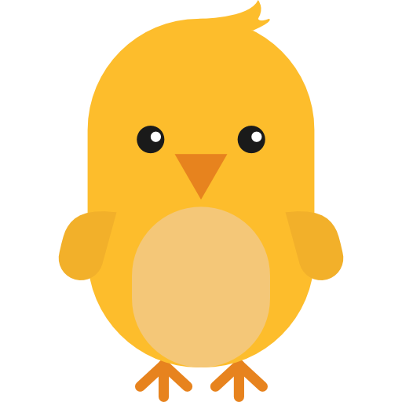
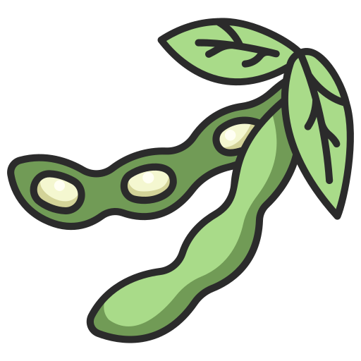

Generalidades
- Morfología quechua
La familia quechua muestra una morfología esencialmente aglutinante y, salvo algún desarrollo muy particular, exclusivamente sufijadora (Adelaar y Muysken 2004). Una palabra quechua está formada necesariamente por una raíz con o sin sufijos, dependiendo del tipo de raíz del que se trate, donde los sufijos pueden clasificarse como derivativos, flexivos e independientes de acuerdo con una posición fija en la estructura de la palabra y con el tipo de relaciones que establecen (Cerrón–Palomino 2003). El siguiente cuadro , basado en Cerrón–Palomino (2003), muestra este orden lineal de los elementos de la palabra:

- Variantes del quechua Huanca
-
La variedad de quechua hablada en el Valle del Mantaro se conforma por tres variedades. Estos tres son:
- Huaylla - Huanca
- Huaycha - Huanca
- Shausha - Huanca
Estas variantes se hablan en los territorios correspondientes a las provincias de Huancayo, Concepción y Jauja, respectivamente.

Fonológicamente, las variedades Huaylla y Huaycha han cambiado el fonema protoquechua /q/ a una oclusiva glotal [ʔ], la misma que ha desaparecido por completo en posición inicial de palabra; en variedad jaujina, por el contrario, dicho protofonema se ha "suavizado", articulándosele como una fricativa glotal, es decir [h]
Proto - Huanca
/q/Huaylla y Huaycha
/q/ > [Ø ~ ʔ]Shausha
/q/ > [h ~ x]Glosa /qaya-y/ [aya-y] [haya-y] llamar /qiru/ [ilu] [hilu] tronco /qućha/ [ućha] [hućha] laguna /maqa-y/ [maʔa-y] [maha-y] golpear /wiqi/ [wiʔi] [wihi] lágrima /śhuqu-y/ [śhuʔu-y] [śhuhu-y] sorber /sinqa/ [sinʔa] [sinha] nariz
- Quechua Wanka por Cerrón Palomino
- Entrevista a Cerrón Palomino por Municipalidad Provincial de Huancayo
- Ráez: Diccionario Huanca Quechua-Castellano
- Conferencia Cerrón Palomino - MINCUL parte 1
- Conferencia Cerrón Palomino - MINCUL parte 2
- Rodolfo Cerrón-Palomino: EL FRANCISCANO RAEZ PRIMER DECODIFICADOR DEL QUECHUA-WANKA
Abecedario - Achahala / Achawaya
- Vocales
- a
- i
- u
- Vocales alargadas
- aa
- aala - maguey
- ii
- iira - era
- uu
- uuli - plástico
- Abecedario - Achahala / achawaya
- A (a)
- anka - gabilán
- CH (cha)
- chuqllu - maíz
- ĆH (ćha) - Consonante retrofleja
- ćhićhu - gestante

- H (ha)
- hiwlla - gaviota
- I
- inchu - picaflor, colibri
- K (ka)
- kulluśh - perdiz
- L (la)
- laćhkay - burilar
- LL (lla)
- llama
- M (ma)
- mishikuna - gatos
- N (na)
- nuna - persona, nunakuna -personas
- Ñ (ña)
- ñawi - ojos, ñawikuna - ojos
- P (pa)
- pillpintu - mariposa
- Q (la q es muda, puede alargar )
- qućha - laguna
- R (ra)
- rakacha - tuberculo de selva
- S (sa)
- sipla - pelado, calvo
- SH (sha)
- shimi - boca
- ŚH (śha) - Consonante retrofleja
- śhukśhu - palo para hilar
- T (ta)
- talwish - tarhui
- U
- ukuśh
- W (wa)
- waćhuku / waćhaku - faja
- Y (ya)
- yanta - leña
Los Números - yupaykuna
-
Numerales del uno al diez
- Cero - walla
-
Huk - uno, suk en Jauja
- Huk wasi - una casa
🏠
- huk wallpa - una gallina
🐓
- huk mishi - un gato
🐈
Ishkay - dos
- ishkay challwa - dos pescados
🐟 🐟
; - ishkay akaśh - dos cuyes
- ishkay akśhu - dos papas
🥔 🥔
Kimsa - tres
- kimsa waaka - tres vacas
- kimsa inchu - tres picaflores
Tawa - cuatro, ćhusku en el Huaycha Huanca
- tawa chuspi - cuatro moscas
🪰 🐟
Pichqa - cinco
- pichqa allqu - cinco perros
Suqta - seis
- suqta lumi - seis piedras
Qanćhis - siete
- qanćhis wishla - siete cucharones
Pusaq - ocho
- pusaq mućhka
Isqun - nueve
- isqun aśhnu
ćhunka - diez
- ćhunka utulu - diez gallos
-
Numerales superiores a diez
A partir del número 11 en adelante se usa el sufijo posesor yuq / niyuq, yuq en caso la palabra culmine en vocal, y niyuq cuando la palabra culmine en consonante
11 - ćhunka hukniyuq
12 - ćhunka ishkayniyuq
13 - ćhunka kimsayuq
14 - ćhunka tawayuq
15 - ćhunka pichqayuq
16 - ćhunka suqtayuq
17 - ćhunka qanćhishniyuq
18 - ćhunka pusaqniyuq
19 - ćhunka isqunniyuq
20 - ishkay ćhunka
21 - ishkay ćhunka hukniyuq
22 - ishkay ćhunka ishkayniyuq
23 - ishkay ćhunka kimsayuq
24 - ishkay ćhunka tawayuq
25 - ishkay ćhunka pichqayuq
26 - ishkay ćhunka suqtayuq
27 - ishkay ćhunka qanćhishniyuq
28 - ishkay ćhunka pusaqniyuq
29 - ishkay ćhunka isqunniyuq
30 - kimsa ćhunka
31 - kimsa ćhunka hukniyuq
32 - kimsa ćhunka ishkayniyuq
33 - kimsa ćhunka kimsayuq
34 - kimsa ćhunka tawayuq
35 - kimsa ćhunka pichqayuq
36 - kimsa ćhunka suqtayuq
37 - kimsa ćhunka qanćhishniyuq
38 - kimsa ćhunka pusaqniyuq
39 - kimsa ćhunka isqunniyuq
40 - tawa ćhunka
- 41 - tawa ćhunka hukniyuq
- 42 - tawa ćhunka ishkayniyuq
50 - pichqa ćhunka
60 - suqta ćhunka
70 - qanćhish ćhunka
80 - pusaq ćhunka
90 - isqun ćhunka
100 - paćhak
101 - paćhak hukniyuq
102 - paćhak ishkayniyuq
103 - paćhak kimsayuq
104 - paćhak tawayuq
110 - paćhak ćhunka
111 - paćhak ćhunka hukniyuq
121 - paćhak ishkay ćhunka hukniyuq
122 - paćhak ishkay ćhunka ishkayniyuq
179 - paćhak qanćhish ćhunka isqunniyuq
379 - kimsa paćhak qanćhish ćhunka isqunniyuq
1,000 - walanka
1001 - walanka hukniyuq
2021 - ishkay walanka ishkay ćhunka hukniyuq
2022 - ishkay walanka ishkay ćhunka ishkayniyuq
10,000 - ćhunka walanka
15,321 - ćhunka pichqa walanka kimsa paćhak ishkay ćhunka hukniyuq
25,321 – ishkay ćhunka pichqa walanka kimsa paćhak ishkay ćhunka hukniyuq
100,000 - paćhak walanka
956,321 – isqun paćhak pichqa ćhunka suqta walanka kimsa paćhak ishkay ćhunka hukniyuq
1,000,000 - hunu
Precisiones gramaticales
Los numerales puede entrar en construcción con las demás clases de nombres dentro de una frase nominal; así por ejemplo:
ishkay chaka - dos puentes
tawa chuklla - cuatro chozas
y adviértase que el núcleo (es decir el sustantivo) no necesita del sufijo plural (kuna), puesto que la pluralidad está ya indicada instrinsecamente en el numeral; pero cuando entre el numeral y el núcleo se intercala uno o más modificadores es obligatoria dicha marca; por ejemplo:
ishkay mawka chakakuna - dos puentes viejos
tawa chiyap taksha chukllakuna - cuatro chozas muy pequeñas
Saludos - Mishki limaykuna
- Allinllachu - hola
- Allin muyun - buenos días (saludo para todo el día)
- Allin tuta - buenas noches
- ¿Imanuyllam kayanki? - ¿Cómo estás?
- ¿Imanuyllam kayalkanki? - ¿Cómo están?
- Allinllam - bien
- Sulpay - gracias
- Imanuyllam - hola, ¡imanuyllam! - ¡qué tal!, ¿imanuyllam? - ¿cómo estás?
- Limaykullak - hola
- Yaymullay - bienvenido/a
- Yaykamullaychik - bienvenidos/as
- Ćhaskikullak - hola como respuesta
- Hamallaa - hasta luego, chao de manera afectuosa
- Tinkunanchikkama - hasta la próxima, nos vemos
- Waalakama - hasta mañana (por la mañana)
- Waala minchakama - hasta pasado mañana
- Huk punkama - hasta otro día
- Huk killakama - hasta el próximo mes
- Watankama - Hasta el otro año
- Pampachaykamay - perdón, disculpa
- Amahaynuulla - por favor
- Sulpayllashunki - muchas gracias
- buenos días - allin waalalla kallaachun
- Allin waalalla kallaachun walaśhkuna - buenos días jovenes
- Allin waalalla kallaachun wamlakuna - buenos días señoritas
- Allin waalalla kallaachun taytallakuna - buenos días señores
- Allin waalalla kallaachun mamallakuna - buenos días señoras
- Allin waalalla kallaachun urukuna - buenos días niños
- Allin waalalla llapallaykichikpaq - buenos días para todos
- allin muyunlla kallaachun - te auguro un buen día
La familia - Ayllu
- awilu - abuelo
 awila - abuela
awila - abuela mama - mamá / mamacha - mamita
mama - mamá / mamacha - mamita tayta - papá / taytacha - papito
tayta - papá / taytacha - papito- wayapa - esposo, varon hombre adulto
- walmi - esposa
wawi - hijo(a) de la mujer / esposa (la esposa tiene wawi)
wamla (walmi) wawi - hija de la esposa
walaśh wawi - hijo de la esposachuli - hijo (a) del varón / esposo (el varón tiene chuli)
wamla (walmi) chuli - hija de varon
walaśh chuli - hijo de varón- pani - hermana del varón (cuñada)
- ñaña - hermana de la mujer (cuñada)
- tuli - hermano de la mujer (cuñado)
- wawki - hermano del varón (entre varones)
willka - nieto(a)
walmi willka - nieta
walaśh willka - nieto- wamla akapakuna - niñas
- walaśh akapakuna - niños
- wamla - señorita
- walaśh - joven varón
- awkish - viejo, anciano
- chakwaśh - vieja, anciana
- chullaśha - viudo, viuda
- nuna - gente
- ñuñu pawaq - último hijo o hija
Partes del cuerpo humano - Aychanchikpa śhutinkuna
 uma - cabeza
uma - cabeza  pata - barriga
pata - barriga  chaki - pierna
chaki - pierna - willpa - labio
 kunka - cuello
kunka - cuello  ñawi - ojo
ñawi - ojo  linli - oreja
linli - oreja - ulku, paaćha - frente
 aacha - cabello
aacha - cabello  uya - cara
uya - cara  shimi - boca
shimi - boca - quijada - kakichu
 kućhus - codo
kućhus - codo likla - brazo
likla - brazo pupu - ombligo
pupu - ombligo- clavícula - usa kanćha
- nuca - kukuti
 waśha tullu - columna vertebral
waśha tullu - columna vertebral liklashku - axila
liklashku - axila waata - costilla
waata - costilla waśha - espalda
waśha - espalda wiyaw - cintura
wiyaw - cintura maki - mano
maki - mano  rukana - dedo
rukana - dedo maki palta - palma de la mano
maki palta - palma de la mano uña - shillu
uña - shillu - uña de la mano - maki shillu
 rodilla - uul, unqul
rodilla - uul, unqul - articulación - muqu
- ćhaki - pie
- piel - karan
 planta del pie - ćhaki palta
planta del pie - ćhaki palta - talón - anku
- diente - kilu
 lengua - hallu
lengua - hallu  intestino - chunchull
intestino - chunchull  estómago - pata
estómago - pata - fosas nasales - sinqa ućhku
- faringe - tunkuri
- pulmón - puywan
- tráquea - tunkuśh
- trompas de falopio - wawi muhu pulinan
- ovario - wawi muhu milachiq
- óvulo - wawi muhu
- útero - wawi lunku
- vagina - laka
- seño - ñuñu, chuchu
- vejiga - ishpay pukuchu
- escroto - luntu lunku
- pene - lani
- tésticulo - luntu
- tetilla - chichi
 hueso - tullu
hueso - tullu - corazón - śhunqu, śhuu
- riñon - lulun
- sangre - yawar, ñawar
- moco - ñuti
- visícula bilial - qayan
- lágrima - wiqi
- hígado - ñati
- cerumen - linli wila
- pupila - ñawi lulu
 cráneo - uma tullu
cráneo - uma tullu - esqueleto - nuna tullu
Los colores - limpikuna
 yana - negro
yana - negro puka - rojo
puka - rojo- yulaa - blanco
- ankash - azul
- tunuśh - amarillo
 wirdi - verde
wirdi - verde  uwi - plomo
uwi - plomo- yana ankash - azul oscuro
- amya anhas - celeste
- uwi untay - gris humo
- amya tunuśh - crema
- yana puka - guindo
- chiwanway - anaranjado
- rusasiika - rosado
- kulli - morado
- allpa limpi - marrón
- alwaśh - amarillento
- illaynilaa - plateado
- uurunilaa - dorado
- ućhpaśh - color ceniza
Animales - uywakuna
- challwa - trucha
 lacha - sapo
lacha - sapo- hampatu - rana
 ulltu - renacuajo
ulltu - renacuajo llama - llama
llama - llama- wikuña - vicuña
- paku - alpaca
- wanaku - huanaco
 waaka - vaca
waaka - vaca tuuru - toro
tuuru - toro- uña - becerro
 kawallu - caballo
kawallu - caballo- mula - mula
 ćhina kawallu - yegua
ćhina kawallu - yegua aśhnu - burro
aśhnu - burro kapish - cabra
kapish - cabra uwish - oveja
uwish - oveja allqu - perro
allqu - perro mishi - gato
mishi - gato- kunish - conejo
 ukumaali - oso
ukumaali - oso atuq - zorro
atuq - zorro- puma - puma
- luychu - venado
 añaśh - zorrillo
añaśh - zorrillo- kala ćhupa - muca (carachupa)
- wiskacha - vizcacha
- unchuchukuy - comadreja
 ukuśh - ratón
ukuśh - ratón hatun ukuśh - rata
hatun ukuśh - rata- uśhu mishi - gato montes
 paatu, utaćhaki - pato
paatu, utaćhaki - pato wallpa - gallina
wallpa - gallina- utulu - gallo
-  chipchi, chiwchi - pollito
 kuntur - cóndor
kuntur - cóndor- anka - gavilán
- killish - cernícalo
- waman - halcón
 tuku- búho
tuku- búho- yakyaka - lechuza
- akakllu - pájaro pito
- wachwa - ganzo andino
- pariwana - flamengo
- kulluśh - perdiz
 ulpay - paloma
ulpay - paloma- chiwaku - zorzal
- inchu - picaflor
 uritu - loro
uritu - loro- tuyaśh - calandrina
- pichiwsa - gorrión
 maśhu - murcielago
maśhu - murcielago
Insectos - kulukuna
- kuyuku - lombriz
 paćhak ćhaki - cien pies
paćhak ćhaki - cien pies pillpintu - mariposa
pillpintu - mariposa chikish - hormiga
chikish - hormiga- wanwaśh - moscardón
 waylish - avispa
waylish - avispa- kaćhikaćhi - libélula
- inchipala - luciérnaga
- mishki tanra - abeja
- añaaru - araña
 mulu kata - mariquita
mulu kata - mariquita rapachu - zancudo
rapachu - zancudo- yulaa kata - manta blanca
 chuklluśh - grillo
chuklluśh - grillo chilliku - saltamonte
chilliku - saltamonte- ismay kunti - escarabajo
 chullu - caracol
chullu - caracol
Alimentos
- shita - yuyo
 ripuyllu - col
ripuyllu - col- haćha kulish - col nativa
- uchu - rocoto
- lichuka - lechuga
 kulanćhu - culantro
kulanćhu - culantro pirihil - perejil
pirihil - perejil hala - maíz
hala - maíz- chuullu - choclo
 alwish - arveja
alwish - arveja yunya - frejol
yunya - frejol-  aawaśh - habas
- talwi - chocho
- kinwa - quinua
 siwara - cebada
siwara - cebada- riigu - trigo
- ahus - ajos
 uryaanu - orégano
uryaanu - orégano- ↓ Allpa lulinćhu wayuykuna - tubérculos
- kulaw - papa nativa
- akśhu - papa
- llullu akśhu - papa nueva
- yulaa aśhu - papa blanca
- luntuśh akśhu - papa amarilla
- kallwa akśhu - papa alargada
- maćhka akśhu - papa arenosa
- shili akśhu - papa de chuño
- mishki akśhu - camote
- shakapa - yacón
- yuka - yuca
- maka - maca
- uwa - oca
- maśhwa - mashua
- ulluku - olluco
- rakacha, laaćhu - arracacha
- sanurya - zanahoria
 ↓ Frutas - Haćhakunapa mishki wayuyninkuna
↓ Frutas - Haćhakunapa mishki wayuyninkuna  ruuta - plátano
ruuta - plátano- pulupulu - granadilla
- paqay - pacay
- lukma - lúcuma
 palta - palta
palta - palta chirimuy - chirimoya
chirimuy - chirimoya- tuunaśh - tuna
- tumwu - granadilla silvestre
- kapuli - aguaymanto
- shankay - cactus
- maatu - variedad de guayaba
- śhawintu - guayaba
- alakanćha - silata
 ↓ carnes - aychakuna
↓ carnes - aychakuna  aycha - carne
aycha - carne- waaka aycha - carne de res
- kuchi aycha - carne de cerdo
- uwish aycha - carne de carnero
- akaśh aycha - carne de cuy
- wallpa aycha - carne de gallina
- kuchipa uman - cabeza de chancho
- uwishpa uman - cabeza de carnero
- uwishpa śhunqun - corazón de carnero
- kuchipa yawarnin - sanger de chancho
- wila - grasa
- chalwa aycha - carne de trucha
- comida de casa - Wasi mikuykuna
- uman caldo - caldo de cabeza
- yaku ćhupi - sopa verde
- patachi - sopa de trigo
- ulluku ćhupi - sopa de olluco
- siplaśha hala - maíz pelado
- tamal - tamal
- muti - mote
- akśhu ankay - papa frita
- wayta - pachamanca
- challwa kanka - trucha frita
- wallpa kaldu - caldo de gallina
- akaśh kanka - cuy chaktado
- Los sabores - Shimi malliy musyay
- allí aśhnakaćha - oloroso, fragancioso
- puchuśha, unćhiśha - avinagrado
- amya - insípido
- kaćhiisha, kaćhisapa - salado
- puchuu - ácido, agrio
- ćhakćhaa - amargo
- asyaa - maloliente
- ayaa, uchusapa - picante
- aśhnaa - apestoso
- mishki - dulce
- miskisapa - muy dulce
Plantas
- plantas medicinales - Hampi haćhakuna, allin qulakuna
- ruda - ruda
- yawar śhunqu - chupa sangre
- wirwina - verbena
- chikurya - achicoria
- amaśh - paico
- matiku - matico
- tullma-tullma - suelda suelda
- maśhwayllu - mastuerso
- aćhawśhu - ortiga
- yulaa aćhawśhu - ortiga blanca
- yana aćhawśhu - ortiga negra
- wamanlipa - huamanrripa
- mana yupa - enrredadera
- kawallup ćhupan - cola de caballo
- puchiska, shillku - amor seco
- rumiru - romero
- ismuśh - monca
- pacha muña - muña de la puna
- anish - anís
 Árboles - Hatun haćhakuna
Árboles - Hatun haćhakuna - kaliptu - eucalipto
- kiswar - quishuar
- lamlaśh - aliso
- pillku - pilco
- layan - sauco
- ritama - retama
- piita - álamo
- chawal - agave lechuguilla
- pinka - penca
 Partes de una planta - Haćhapa lakiyninkuna
Partes de una planta - Haćhapa lakiyninkuna  lapi - hoja
lapi - hoja- wayu - fruto
- wayta - flor
 pisi - raíz
pisi - raíz- ilun - tallo
- Flores - waytakuna
- rusas wayta - rosas
- lawil wayta - clavel
- panti wayta - dalia
- alili wayta - alelí
- llama wayta - flor de llama
- hirasul wayta - girasol
- ritama wayta - flor de retama
- limalima wayta - lima lima
- sarsillu wayta - fucsia
- hantu wayta - cantuta
- chapla wayta - azucena
- aya wayta - geranio
- malkaśh wayta - margarita
Prendas de vestir - Atalankuna
- Vestimenta de mujer - Walmipa atalankuna
- wikuña chuku - sombrero de vicuña
- lliklla - mantilla
- luusa - blusa
- chumpa - chompa
- kata - manta
- kutun - coton
- kutuncha - mini coton
- waćhaku - faja
- hustan - fustan
- wayta wallin - pollera bordado
- hanapa - mil rayas
- lulipa - falda interno
- makitu - maquito
- Vestimenta de varón - Walaśhpa atalankuna
- chuku - sombrero
- tirnu - saco
- ishtira chuku - sombrero de paja
- kamisa - camisa
- chullu - gorro de lana
- punchu - poncho
- wanka chaliku - chaleco wanka
- śhukuy - ojota
Partes de la casa - Wasipa lakiyninkuna
- wasi - casa
- pila - pared
- punku - puerta
- ućhku likana - ventana
- ata - techo
- yanuna wasi - cocina
- objetos de cocina
- malay - batan
- tunay - piedra ovalada para moler
- mućhka - mortero
- tika - adobe
- tiha - teja
- manka - olla
- allpa manka - olla de barro
- hiiru manka - olla de metal
- pirul - perol
- winaku - recipiente
- kasirula - cacerola, sartén
- wisha - cucharón
- mati - plato
- mikuna - cuchara
- upyana - taza, vaso
- kaćhiputu - salero
- mishkiputu - azzucarero
- kallana - tiesto
- kanaśhta - canasta
- shuyshuna - colador
- kuchuna - cuchillo
- yamta - leña
- ulpu, laki - cántaro
- pichaku - escoba
- mikuna wasi - comedor
- puñuna - dormitorio
- ñawichana wasi - lugar de lectura
- mikuy ćhulana - almacén de alimentos
- ishpana wasi - baño
- patiyu - patio
- paakuna - lavadero
- taaśhana - lavadero de ropa
- atala walkana - tendedero
- walkaku - colgador
- kanćha - corral
- wayta wirta - jardín
- wirta - huerto
- akaśh wasi - galpón de cuyes
- wallpa wasi - gallineros
- kuchi wasi - porqueriza
- amu chapina - basurero
- sawan - zaguán
- chakana - travezaño
- tapya - tapia
- uśha wasi, chuklla - choza
- tika - adobe
- tiha - teja
- wanu - guano
- waaka wanu - abono de vaca
- llama wanu - abono de llama
- uwish wanu - abono de oveja
- akaśh wanu - abono de cuy
- lulakunapaq allin - herramientas
- pichaku - escoba
- ishipina - escalera
- yamta - leña
- ćhaki taklla - herramienta para voltear la tierra
- aradu, taklla - arado
- lluuqu - yugo
- machiti - machete
- kuuśha - hoz
- haacha - hacha
- waska - soga
- piku - pico
- kallachu - pico de dos puntas
- paala - lampón
- tupuna - balanza, romana
- martillu - martillo
- alikati - alicate
- puchka - hilado
- śhukśhu - huso
- millwakuna - lanas
- kulul - ovillo
- atku - algodón
- llama millwa - lana de llama
- paku millwa - lana de alpaca
- wikuña millwa - lana de vicuña
- uwish millwa - lana de oveja
Danzas
- unay waylaśh - huaylas antiguo
- muśhuq waylaśh - huaylas moderno
- shapi tuśhuy - los shapis
- wakun tuśhuy - huaconada
- chunkinara - chonguinada
- tunantara - tunantada
Naturaleza
- inti - sol
- killa - luna
- nina - fuego, candela
- wawya, waywa - viento
- kuyllur - estrella
- mayu - rio
- qućha - laguna
- tamya -lluvia
- yaku - agua
- śhulli - rocío
- lasu - nevado(a)
- apu - montaña sagrada
Dias de la semana, Meses del año, estaciones del año
- Meses del año
- allayku killa - enero
- tamya killa - febrero
- puuy killa - marzo
- mikuy killa - abril
- muhuy killa - mayo
- ninakilla - junio
- uyya - julio
- waywakilla - agosto
- waytakilla - setiembre
- talpuykilla - octubre
- ayakilla - noviembre
- paway killa - diciembre
- Los días de la semana
- killa muyun - lunes
- apu muyun - martes
- uyllur muyun - miércoles
- illapa muyun - jueves
- chaska muyun - viernes
- turumanya muyun - sábado
- inti muyn - domingo
- Estaciones del año
- ćhilaw mita - invierno
- lupay mita - verano
- chaki mita - otoño
- wayta mita - primavera
- El tiempo
tuta - tuta - madrugada
aspi - aspi - alba
wallpa waqay - canto del gallo (waqay: llorar, cantar, hacer música, tocar
huk wallpa waqay = ćhawpi tuta - media noche
ishkay wallpa waqay - 1 am
kimsa wallpa waqay - 2 am
tawa wallpa waqay - 3 am
pichqa wallpa waqay - 4 am
pishqu waqay - 5 am
waala - mañana (la primera parte del día)
waala mikuy - desayuno
llapakuy qallaykuy - inicio del trabajo
mishkipay - 9:30 - 10:00 am
ćhawpi muyun / ćhawpi inti / mirinday / milkapa mikuy / mikupakuy / ćhawpi pun - medio día
wayrapay - 2:30 - 3:00 3:30 pm (wayra / wawya - viento, rápido, veloz)
hamapaykuy - 5 pm
kishkishyay / kishkish waqay - 5:30 pm (kishkish - cigarra)
aspykuy - 6:00 pm
tutaykuy / tuta mikuy - 6:30 - 7:00 pm
puñukuy - 7 pm
ćhawpi tuta - media noche
mishkipayćhaw ¿imaktam lulanki? - entre las 09:30 am - 10:00 am, ¿qué haces?
yaqa mishkipayćhaw akhuktam taqtaa - yo entre las 09:30 am - 10:00 am cultivo la papaćhawpi muyunćhuy ¿imaktam lulapaakunki? - al medio día, ¿qué hacen?
ćhawpi muyunćhuy kuchiktam michipaakuu - a medio día pastamos los cerdos¿imaktam ćhawpi intićhu lulapaakunki? - ¿qué realizan en el medio día?
yaqakuna ćhawpi intićhu mikupaakuumi - nosotros comemos al medio día¿hayka pacham? - ¿cuánto tiempo es?, ¿a que hora es?
pishqu waqay pacham - a las 05:00 am (los gallos cantan)¿Imay uuram?, ¿Imay uuram kayan? - ¿Cuándo hora es?, ¿A qué hora es? (uura: refonologización de hora)
achikpay pacha - madrugada
waala pacha - mañana
tardi pacha - tarde
tutaykuy / tuta pacha - noche
4:15 pm = 4 uura 15 tardi pacham
3:45 am = 3 uura 45 achikyay pacham
7:30 am = 7 uura 30 waala pacham
05:00 pm = 5 uura tardi pacham
10:00 pm = 10 uura tutaykuy pacham
3:50 pm = 3 uura 50 minuto tardi pacham
Adjetivos
- Adjetivos calificativos
- hatun - grande
- kićhki - angosto
- ñañu - delgado
- uchuk - pequeño
- suytu - largo
- tita - grueso
- Adjetivos de cantidad
- achka - mucho (contable)
- Ancha - mucho (no contable)
- Aśhlla - poco
- pasaypa - demasiado
- llapshalla - liviano
- llasaq - pesado
- Adjetivos de calidad
- chuya - limpio
- Anla - sucio
- Suuma - lindo
- millachikuy - feo
- muśhu - nuevo
- mawka - viejo
Verbos
- Listado de verbos
- Asiy - reir / asikuy - reirse
 likay - mirar
likay - mirar  mikuy - comer
mikuy - comer  puñuy - dormir
puñuy - dormir puliy - caminar
puliy - caminar takiy - cantar
takiy - cantar talpuy - sembrar
talpuy - sembrar- śhukay - silbar
- apaliy - guapear
 sićhuy - escribir
sićhuy - escribir- kuchuy - cortar
 muskiy - oler
muskiy - oler uyaliy - escuchar
uyaliy - escuchar- yatay - palpar
- yaćhachiy - enseñar
 tuśhuy - bailar
tuśhuy - bailar paćhkay - saltar
paćhkay - saltar- michiy - pastar
- puchkay - hilar
 awsay - jugar
awsay - jugar- hilay - coser
- ćhulay - guardar
- chakiy - secar
- pallay - recoger
- muchay - besar
- makallay - abrazar
- kuyay - amar
- munay - querer
- waylluy - acariciar
- ćhiqniy - odiar
- shinkay - embriagar
- utuy - reir
- qishpiy - subir
- ulaykuy - descender
- qunupay - abrigar
- yanapay - ayudar
- amachay - proteger
- munday - pelar
- yapay - sumar
- pishichiy - restar
- milachiy - multiplicar
- lakiy - dividir
- yaćhapakuy - estudiar
- Conjugación de verbos
- Kay - ser
yaqa kaa - Yo soy
¿Imam śhutiyki? - ¿cuál es tu nombre?
- yaqa Dámarismi kaa - Yo soy Dámaris (sufijo "mi" = ciertamente)
- yaqa Davidmi kaa - Yo soy David
- yaqa Maríam kaa - Yo soy María
- yaqa Rosam kaa - Yo soy Rosa
- yaqa Andrésmi kaa - Yo soy Andrés
- yaqa Josémi kaa - Yo soy José
qam kanki - tú eres
pay kan (paymi) - él/ella es
Paymi Mario - él es Mario
yaqanchik kapaakunchik - nosotros somos (inclusivo)
yaqakuna kapaakuu - nosotros somos (exclusivo)
qamkuna kapaakunki - ustedes son
paykuna kapaakun - ellos/ellas son
- Mikuy - comer
- yaqa
miku
u
- Yo como - ---
- qam
miku
nki
tú comes - qam aycha
kta
miku
nki
- tú comes carne (kta = a/la) - pay
miku
n
- él/ella come - ---
- yaqa
nchik
miku
paaku
nchik
- nosotros comemos (inclusivo) - yaqa
kuna
miku
paaku
u
- nosotros comemos (exclusivo) - qam
kuna
miku
paaku
nki
- ustedes comen - pay
kuna
miku
paaku
n
- ellos/ellas comen - Lulay - trabajar
- yaqa
lula
a
- Yo trabajo - ---
- qam
lula
nki
tú trabajas - ---
- pay
lula
n
- él/ella trabaja - ---
- yaqa
nchik
lula
paaku
nchik
- nosotros trabajamos (inclusivo) - ---
- yaqa
kuna
lula
paaku
u
- nosotros trabajamos (exclusivo) - ---
- qam
kuna
lula
paaku
nki
- ustedes trabajan - ---
- pay
kuna
lula
paaku
n
- ellos/ellas trabajan - ---
- Michiy - pastar
- yaqa
michi
a
- Yo pasto - ---
- qam
michi
nki
tú pastas - ---
- pay
michi
n
- él/ella pasta - ---
- yaqa
nchik
michi
paaku
nchik
- nosotros pastamos (inclusivo) - ---
- yaqa
kuna
michi
paaku
u
- nosotros pastamos (exclusivo) - ---
- qam
kuna
michi
paaku
nki
- ustedes pastan - ---
- pay
kuna
michi
paaku
n
- ellos/ellas pastan - ---
- Tuśhuy - bailar
- yaqa
tuśhu
u
- Yo bailo - ---
- qam
tuśhu
nki
tú bailas - ---
- pay
tuśhu
n
- él/ella baila - ---
- yaqa
nchik
tuśhu
paaku
nchik
- nosotros bailamos (inclusivo) - yaqa
nchik
unay waylaśhta
m
tuśhu
paaku
nchik
- nosotros bailamos huaylas antiguo (sufijo "ta" = a/la, sufijo "m" = ciertamente) - yaqa
kuna
tuśhu
paaku
u
- nosotros bailamos (exclusivo) - ---
- qam
kuna
tuśhu
paaku
nki
- ustedes bailan - ---
- pay
kuna
tuśhu
paaku
n
- ellos/ellas bailan - ---
Pronombres
- Prononbre personales
- yaqa - yo (primera persona)
- qam - tú / usted (segunda persona)
- pay - él / ella (tercera persona)
- yaqa
nchik
- nosotros/as (inslusivo) - yaqa
kuna
- nosotros/as (excepto ustedes) - qam
kuna
- ustedes - pay
kuna
- ellos / ellas - Prononbre interrogativos
¿Ima? - ¿Qué / Cuál?
-
¿ima? - ¿qué / cuál?
-
¿Imam? śhutiyki? - ¿Cúal es tu nombre?
śhutii Juanam - mi nombre es Juana -
¿Imam? śhutiyki? - ¿Cúal es tu nombre?
śhutii Pedro Gonzales Paucarmi - mi nombre es Pedro Gonzales Paucar -
Imam malkaykipa śhutin? - ¿Cuál es el nombre de tu pueblo?
Ukupilqam
Qsapampam śhutin
El Tambom śhutin ¿Hayka? - ¿Cuánto?
-
¿Hayka watayuqmi kanki? - ¿Cuántos años tienes?
Kimsa ćhunka watayuqmi kaa - Yo tengo 30 años -
¿Hayka kuchim kayalkan? - ¿Cuántos cerdos tienes?
Achka - muchos / Aśhlla - pocos ¿Mayqan? - ¿Cuál?
-
¿Mayqannin? - ¿Cuál de ellos?
¿May? - ¿Dónde? ( ¿Mayćhu? / ¿Maychaw? - ¿Dónde?)
-
¿Mayćhuumi malkayki kayan? - ¿Dónde está tu pueblo?
Satipućhu / Satipućhawmi / Satipućhuymi kayan -
¿Mayćhawmi yaćhanki? - ¿Dónde resides?
Wasiićhaw - en mi casa ¿Pi?- ¿Quién?
-
¿Pim kanki? - ¿Quién eres?
1. ¿Imam śhutiyki? - ¿Cuál es tu nombre?
Yaqa Leonor Efigenia Chavéz Rojasmi kaa.
2. ¿Maypiqtam kanki? - ¿De dónde eres?
Pukaraa makapiqtam kaa.
3. ¿Hayka watayuqmi kanki? - ¿Cuántos años tienes?
Yaqa 85 watayuqmi kaa - yo tengo 85 años.
4. ¿Imaktam lulanki? - ¿Qué haces?
Yaqa takikuqmi kaa. -
imay - cúando
Sufijos
yuq / niyuq - sufijo posesor, tenencial
Wankayuq - lugar que posee una piedra - Huancayo
lamlaśhniyuq - lugar que posee aliso - comunidad campesina de Huancayo
tawa ñawiyuq ukumaali - el oso que posee cuatro ojos
chi |chi|. Sufijo verbal - Hacer. Sirve para formar verbos que indican mandato
wañu-chi-y - matar, wañu-y=morir
suwa-chi-y - hacer robar, suwa-y=robar
chu |chu|. Sufijo negativo - . En preguntas negativas se pone después de la negación y en respuestas después del verbo.
mana-chu lisqi-nki - ¿no conoces?, lisqi-y=conocer, saber
lisqi-i-chu - no conozco, lisqi-y=conocer, saber
chun |chun|. Sufijo interrogativo - .
śhamu-nqa-chun icha mana-chun - ¿vas a venir o no?
ćhu / ćhuu / ćhaw / ćhuy . Sufijo locativo - En (el/la), entre. Al final de la palabra toma la forma ćhu, al interior de una palabra toma la forma ćhuu, ćhaw en desuso.
Ćhu = Ćhuu = Ćhuy = Ćhaw - en las 04 formas se puede usar
wasi-ćhu - en casa
Wasiićhuumi kaykaa - Estoy en mi casa
Wasillaćhu kakuy - permanece en casa
¿Mayćhawmi mishikaq kayan? - ¿Dónde está el gato?
Lulićhawmi kayan - Está dentro
Hawaćhawmi kayan - Está fuera¿Mayćhuumi ukushkaq kayan? - ¿Dónde está el ratón?
Qishpina hananćhuumi kayan - Está encima de la escalera
Qishpina ulayninćhuumi kayan - Está debajo de la escalera¿Mayćhuymi kayan? - ¿En dónde está?
alliqćhuymi kayan - está a la derecha (alliq: derecha)
ichuqćhuymi kayan - está a la izquierda (ichuq: izquierda)ćhawpi muyunćhuy ¿imaktam lulapaakunki? - al medio día, ¿qué hacen?
ćhawpi muyunćhuy kuchiktam michipaakuu - a medio día pastamos los cerdos¿imaktam ćhawpi intićhu lulapaakunki? - ¿qué realizan en el medio día?
yaqakuna ćhawpi intićhu mikupaakuumi - nosotros comemos al medio díakama |kama|. Sufijo nominal - Hasta, durante, mientras; conforme, igualmente a todos, del mismo modo.
chay-kama - mientras tanto, chay=tanto
tawa-n-kama - cuatro a cada uno
kaq |kaq|. Sufijo artículo - El, la, los, las, lo.
walaśh-kaq - el muchacho
kta / ta |kta / ta|. Sufijo acusativo - a, al, a la, la, el.
kta / ta, sufijo acusativo "a, al, a la, la, el (objeto directo)". El sufijo "kta" pierde su primera consonante cuando el tema o raíz con la cual se combina acaba en consonante o en vocal larga. En la variedad jaujina solo se da la forma simplificada "ta". En Acobamba, Cochas, Comas y Andamarca, elimina la "k"
tantakta munaa - quiero pan
lumikta apamunki - vas a traer piedra
ulpayta-m taliqlun - encontró una paloma
pusata lantiqlun - compró ocho
tiyu-nta maqaykan - está golpeando a su tío
En la variedad jaujina existen estas formas -
tantata munaa - quiero pan
lumita apamunki - vas a traer piedra
wamlakaqta yakuta quy - dale agua a la muchacha
ku |ku|. Sufijo verbal - Me, te, se, nos. Se emplea para formar verbos reflexivos. Los verbos reflexivos expresan una acción realizada y recibida al mismo tiempo por el sujeto. Por ejemplo me levanto, te levantas, se levanta, nos levantamos.
tuki-llam puñu-ku-u - me duermo de lo más bien. Tuki. adj. Bonito. Puñu-y. verb. Dormir. -m suf. posesor, -lla suf. independiente. nomas
kuna |kuna|. Sufijo nominal - . Sirve para la formación de plurales
wasi-kuna - casas
wallpa-kuna - gallinas
l |-l|. Sufijo subordinante - Ando, endo. Sirve para la formación de gerundios
miku-l alli-ya-nki-m - comiendo mejorarás (de salud)
laq |laʔ|. Sufijo independiente - Todavía, aún, recién; antes, primero.
miku-yka-n-laq - todavía está comiendo
layku |layku|. Sufijo nominal - Por motivo de, por(que), a causa de, en razón de, motivo, .
aswa-layku-m śhamu-n - viene motivado por la chicha
lka |lka|. Sufijo verbal - . Va antecedido del sufijo |yka| y sirve para formar plurales de actualidad en los verbos
miku-ku-yka-lka-n - están comiendo todos con disfrute
lqu |lʔu|. Sufijo verbal - . Al presente indicativo lo hace pretérito
miku-lqu-n - acaba de comerlo
li |li|. Sufijo verbal - . Indica que algo se hace en pequeña porción, que se comienza
puñu-li-yka-n - está a punto de dormir
lla |lla|. Sufijo independiente - Nomás, solamente, nada más, justo (exacto), sino, solo. A veces forman con él los diminutivos y también sirve para manifestar cortesía
tanta-lla-kta muna-a - quiero solo pan
m / mi - sufijo evidencial (expresan que el hablante posee conocimiento o experiencia de primera mano de la veracidad de lo que dice)
- ----
ma |ma|. Sufijo verbal - . Sirve en las transiciones de segunda y tercera personas
lika-ma-nki - tu me ves
likq-ma-n - él/ella me ve
man |man|. Sufijo nominal - a, hacia, vamos (direccional).
mayu-man - hacia el río
tayta-yki-man willa-y - avísale a tu padre
"piqta" - sufijo de procedencia, desde, acerca de, sobre
¿Maypiqtam kayanki?
- ¿De dónde eres? (may: pronombre ¿dónde?)Yaqa pukaraapiqtam kaa
- Yo soy de PucaráYaqa wankayuqpiqtam kaa
- Yo soy de HuancayoQam Limapiqtam kayanki
- usted es de LimaPaykuna Chupacapiqtam kayalkan
- ellos son de Chupaca-
"q" - Sufijo agentivo, alusión al agente de la acción expresada por el verbo
llamkaq - (llamkay - trabajar)
- el que trabaja, el trabajadortuśhuq - (tuśhuy - bailar)
el que baila, el bailarínawsaq - (awsay - jugar)
- el que juega, el jugadoryaćhachikuq - (yaćhachikuy - enseñar)
- docenteyupaq - (yupay - contar)
- contadoryaqa takikuqmi kaa - (takiy - cantar)
- yo soy cantantepay wasichakuqmi (wasichakuy - construir)
- él es albañilpay awsaqmi (awsay - jugar) -
- él es jugadorpaykuna tuśhuqmi - (tuśhuy - bailar)
- ellas son bailarinas"yka /yaa" - esta, estamos, sufijo durativo indica prolongación de la acción en pasado, presente y futuro / yka se usa en xauxa wanka, ya en los demás
Yaqanchik likaykanchik
nosotros estamos leyendoYaqaquna sichuyalkaa
- nosotros estamos escribiendoWankayuqćhuumi kaykaa
- yo estoy en huancayoyaqa akśhuktam talpuyaa
- yo estoy sembrando papapay walkiktam utkayan
- él esta bordando un fustanqam aychaktam mikuyanki
- tú estás comiendo carnepaykuna aswaktam upyaykan
- ellos están bebiendo chicha / aswa: chichayaqa kichwaktam yaćhapakuykaa
- yo estoy estudiando quechuaconjugaciones con el verbo kay - ser
yaqa kaykaa
- yo estoyqam kaykanki
- tú estaspay kaykan
- el/ella estáyaqanchik kaykalkanchik
- nosotros estamos (inclusivo) /lka: plurarizador del verboyaqakuna kaykalkaa
- nosotros estamos (exclusivo)qamkuna kaykalkanki
- ustedes estánpaykuna kaykalkan
- ellos/elas estánconjugaciones con el verbo talpuy - sembrar
yaqa talpuykaa
- yo estoy sembrandoqam talpuykanki
- tú estas sembrandopay talpuykan
- el/ella está sembrandoyaqanchik talpuykalkanchik
- nosotros estamos sembrando (inclusivo)yaqakuna talpuykaa
- nosotros estamos sembrando (exclusivo)qamkuna talpuykalkanki
- ustedes están sembrandopaykuna talpuykalkan
- ellos/elas están sembrandoconjugaciones con el verbo utkay - bordar
yaqa utkaykaa
- yo estoy bordandoqam utkaykanki
- tú estas bordandopay utkaykan
- el/ella está bordandoyaqanchik utkaykalkanchik
- nosotros estamos bordando (inclusivo)yaqakuna utkaykaa
- nosotros estamos bordando(exclusivo)qamkuna utkaykalkanki
- ustedes están bordandopaykuna utkaykalkan
- ellos/elas están bordandoconjugaciones con el verbo mikuy - comer
yaqa mikuykaa
- yo estoy comiendoqam mikuykanki
- tú estas comiendopay mikuykan
- el/ella está comiendoyaqanchik mikuykalkanchik
- nosotros estamos comiendo (inclusivo)yaqakuna mikuykaa
- nosotros estamos comiendo (exclusivo)qamkuna mikuykalkanki
- ustedes están comiendopaykuna mikuykalkan
- ellos/elas están comiendoconjugaciones con el verbo upyay - beber
yaqa upyaykaa
- yo estoy bebiendoqam upyaykanki
- tú estas bebiendopay upyaykan
- el/ella está bebiendoyaqanchik upyaykalkanchik
- nosotros estamos bebiendo (inclusivo)yaqakuna upyaykaa
- nosotros estamos bebiendo (exclusivo)qamkuna upyaykalkanki
- ustedes están bebiendopaykuna upyaykalkan
- ellos/elas están bebiendoCha - sufijo diminutivo
taytacha - papito (abuelito)
mamacha - mamita (abuelita)
wamlacha - adolescente, niña
wasicha - casita
pa - sufijo genitivo
pa / p - de (el/la) sufijo genitivo, cuando la raíz o el tema terminan en vocal breve la vocal del sufijo se suprime, en algunas localidades de Jauja se mantiene la forma pa aun en dicho contexto.
nunap - de gente
palumap - de paloma
walashpa - de muchacho
yawarpa - de sangre
manaapa - de mi madre
con pronombres exige concordancia -
yaqap chukuu - mi sombrero
qampa chukiyki - tu sombrero
paypa chukun - su sombrero
con algunas raices o con temas nominales pa deriva adverbios -
qipap - de detrás
ulaypa - por debajo
hanap - por arriba
chakip - a pie
tutap - de noche
muyunpa - de día
kinlaypa - de través
rasunpa - de veras
manchaypa - temerariamente
pakaypa - a escondidas
en tercera persona con el apoyo del morfema vacío "ni", "pa" forma frases adverbiales que se pueden traducir por "a través de", "por" -
¡ćhaklanni-npa likuy! - ¡vete por la chacra!
ulqunni-npa qishpikun - se escapó por el cerro
Nishqa - dícese, denominado, llamado
---
sufijo posesivo -
estructura en caso de que la palabra termina en vocal
estructura en caso de que la palabra termina en vocal: a, i, u tiene la forma 1era: a,i u; 2da: yki; 3era: n, nchik
wasii - mi, mío - mi casa 1era persona, cuando termina en vocal se duplica la vocal
wasiyki - tu, tuyo - tu casa 2da persona
wasin - su, de él/ella, suyo - su casa 3era persona
wasinchik - nuestro, nuestra - nuestra casa1era persona inclusivo plural
wasiikuna - nuestros, nuestras - nuestras casas 1era persona plural exclusivo, cuando termina en vocal se duplica la vocal
wasiykikuna - sus de ustedes - sus casas2da persona plural
wasinkuna - sus, de ellos/ellas, suyos - sus casas 3era persona plural
estructura en caso de que la palabra termina en consonante
estructura en caso de que la palabra termina en consonante, se coloca el sufijo nulo "ni"
akaśhnii - mi, mío - mi cuy 1era persona
akaśhniyki - tu, tuyo - tu cuy 2da persona
akaśhnin - su, de él/ella, suyo - su cuy 3era persona
akaśhninchik - nuestro, nuestra - nuestro cuy1era persona inclusivo plural
akaśhniikuna - nuestros, nuestras - nuestros cuyes 1era persona plural exclusivo
akaśhniykikuna - sus de ustedes - sus cuyes2da persona plural
akaśhninkuna - sus, de ellos/ellas, suyos - sus cuyes 3era persona plural
Gentilicios
- Masculino
Wanka walaśh - huancaíno
Chupaca walaśh - chupaquino
Viques walaśh - viquesino
Perú walaśh - peruano
- Femenino
Wanka wamla - huancaína
Uñas wamla - uñasina
Lima wamla - limeña
Perú wamla - peruana
Oficios
- Para la descripción de los oficios se usa el sufijo agentivo "q" = aquél / aquella / la / el que... que reemplaza al infinitivo "y = ar, er, ir"
- Se usa además el sufijo reflexivo "ku" que puede traducirse como "se", sin embargo se considerará como sufijo nuloPichaq = Pichakuq - aquel que barre - barrendero
Puliq = Pulikuq - aquel que camina - caminante
Talpuq = Talpukuq - aquel que siembra - sembrador/ra
Pallaq = Pallakuq - aquel que recoge, cosecha - recolector
Takiq = takikuq - aquel que canta - cantante
Yanuq = Yanukuq - aquel que cocina - cocinero/a
Amachaq = Amachakuq - aquel que protege - protector/a, abogado
Yaćhachiq = Yaćhachikuq - aquel que enseña - maestro, profesor
Yaćhapaq = Yaćhapakuq - aquel que estudia - estudiante
Juiciu apaq - Abogado
Yupaq - Contador
Uywa hampiq - Veterinario/a
Ishyachikuq - Obstetra
Llimpiq - Dibujante
Wasichakuq - Constructor de casa
Willakuq - Comunicador
Nina wañuchiq - Bombero
Tuśhuq - Bailarin
Llimpiq - Pintor (casa)
Llushikuq - Pintor (arte)
Hampiq - Médico
Tanta lulaq - Panadero/a
Laćhkaq - Escritor/a, burilador/a
Hilaq / Silaq - Costurero/a
Diálogos
¿Imam śhutiyki?
-
¿Imam śhutiyki? - ¿Cuál es tu nombre? ( m/mi: cuando no está el verbo en la oración entonces "m/mi" asume el verbo, yki: tu)
Yaqa Davidmi kaa - Yo soy ciertamente David (kaa: soy, mi: ciertamente)
Yaqa Miriammi kaa - Yo soy Miriam
Yaqa Edgarmi kaa - Yo soy Edgar
Yaqa Lyndam kaa - Yo soy Lynda
Yaqa Flormi kaa - Yo soy Flor
Yaqa Miguelmi kaa - Yo soy Miguel
Yaqa Vivianmi kaa - Yo soy Vivian
Yaqa Denissmi kaa - Yo soy Deniss
Yaqa Antoniom kaa - Yo soy Antonio
Yaqa Alexmi kaa - Yo soy Alex
Yaqa Gustavom kaa - Yo soy Gustavo
Yaqa Lidiom kaa - Yo soy Lidio
Yaqa Taniam kaa - Yo soy Tania
- Yaqapa Maríam śhutii - yo soy María
- Rosam śhutii - yo soy Rosa
- Yaqa Andrés śhutiyuqmi kaa - yo soy Andrés
- śhutii Josémi - yo soy José
¿Imam lluy śhutiyki?
-
¿Imam lluy śhutiyki? - ¿Cuál es tu nombre completo? ( m/mi: cuando no está el verbo en la oración entonces "m/mi" asume el verbo, yki: tu) , lluy completo
Yaqapa David García Ventocillam śhutii - Mi (i) nombre (śhuti) es (m) David García Ventocilla de (pa) Yo (Yaqa) - Mi nombre es David García Ventocilla
Yaqapa David García Ventocillam śhutii
¿Haykawatayuqmi kayanki?
Yaqa 29 (ishkay ćhunka isqunniyuq) watayuqmikaa
- yo (yaqa) soy (kaa) ciertamente (mi) poseedora (yuq) de año (wata) veintinueve - yo tengo 29 añosYaqa tawa watayuqmi kaa - yo (yaqa) soy (kaa) ciertamente (mi) poseedora (yuq) de año (wata) cuatro - yo tengo 4 años
Yaqa 34 (kimsa ćhunka tawayuqmi kayaa - yo tengo 34 años
Yaqa 39 (kimsa ćhunka isqunniyuqmi kayaa - yo tengo 39 años
¿Imaktam lulanki?
¿Imanktam lulanki? - ¿Qué (Ima) cosa (kta) ciertamente (mi) haces?
Yaqa awsaqmi kaa - yo (yaqa) soy (kaa) ciertamente (mi) el que (q) juega (awsa) - Yo soy jugador
Yaqa ingeniero alimentarionishqam kaa - yo (yaqa) soy (kaa) ciertamente (m) denominado (nishqa) ingeniero alimentario - Yo soy ingeniero alimentario
Yaqa ingeniero ambientalnishqam kaa - yo (yaqa) soy (kaa) ciertamente (m) denominado (nishqa) ingeniero ambiental - Yo soy ingeniero ambiental
¿Maypiqmi kayanki? / ¿Maypiqta kayanki?
¿Maypiqmi kayanki? ¿De dónde eres?
Yaqa Sapallangapiqmi kaa - yo (yaqa) soy (kaa) ciertamente (mi) de (piq) Sapallanga
Yaqa Huancayuqpiqta kaa - Yo soy de Huancayo
Yaqa Concepciónpiqta kaa - Yo soy de Concepción
¿Haykam?
¿Haykam - ¿Cuánto es?
3 - kimsam - es tres
9 - isqunmi - es nueve
2 - ishkaymi - es dos
5 - pichqam - es cinco
¿Hayka kuchikunanm kayalkan?
¿Hayka kuchikunanm kayalkan? - ¿Cuántos cerdos hay?
5 (pichqa) kuchikunam kayalkan - Hay 5 cerdos-
¿Hayka allqukunanm kayalkan? - ¿Cuántos perros hay?
4 (tawa) allqukunam kayalkan - Hay 4 perros -
¿Hayka mishikunanm kayalkan? - ¿Cuántos gatos hay?
2 (ishkay) mishikunam, ulqu mishi, ćhina mishi kayalkan - Hay 2 gatos, gato macho, gato hembra -
¿Hayka wallpakunanm kayalkan? - ¿Cuántos gallinas hay?
6 (suqta) wallpakunam kayalkan - Hay 2 gatos, gato macho, gato hembra ¿Pim kanki?
¿Pim kanki? - ¿Quién ciertamente(m) eres?, kanki: eres (segunda persona)
Yaqa David García Ventocillam kaa - Yo(yaqa) soy(kaa) ciertamente(m) David García Ventocilla
Huancayuq malkapiqtam kaa - Soy(kaa) en efecto(m) del(piqta) pueblo(malka) de Huancayo
Yaqa 39 (kimsa ćhunka isqunniyuq) watayuqmi kaa - Yo tengo 39 años
Yaqa ingeniero ambientalnishqam kaa - Soy ingeniero alimentarioYaqa David García Ventocillam kaa - Yo(yaqa) soy(kaa) ciertamente(m) David García Ventocilla
Huancayuq malkapiqtam kaa - Soy(kaa) en efecto(m) del(piqta) pueblo(malka) de Huancayo
Yaqa 26 (ishkay ćhunka suqta) muyunćhu, abril killaćhaw, 1982 (walanka isqun paćhak pusaq ćhunka ishkayniyuq) wataćhuymi nasilqaa - Yo(yaqa) nací(naasilqaa, lqa=marca pasado, naasi=refonelización de la palabra nací) en efecto(mi) en el(ćhaw=en el) año(wata) 1982, en el(ćhaw) mes(killa) de abril, en el(ćhu) día(muyun) 21.
Huancayuq malkaćhu, El Tambo distrito nishqaćhaw, Huancayuq provincia nishqaćhu. Junín región nishqaćhu, Perú suyućhu. - En el(ćhu) pueblo(malka) de Huancayo, en el(ćhu) denominado-conocido(nisha) distrito de El Tambo, en el(ćhu) denominado-conocido(nisha) provincia de Huancayo, en el(ćhu) denominado-conocida región de Junín, en la(ćhu) nación(suyu) de Perú.
Yaqa ingeniero alimentarionishqam kaa - Soy ingeniero alimentarioSaludos entre hermanos/as
Imanuullam ñañaa - ñaña - hermana, ñañaa - mi hermana
 Allinllam ñañaa - bien mi hermana
Allinllam ñañaa - bien mi hermanaQam wawhiimi kanki - tú eres mi hermano
 Aw, wawhiykim kaa - si, yo soy tu hermano
Aw, wawhiykim kaa - si, yo soy tu hermanoImanuyllam panichallaa- Cómo estás hermanita mía
 Allinllam tulichallaa bien nomas mi hermanita lindo
Allinllam tulichallaa bien nomas mi hermanita lindoHuk muyunkama tulii - hasta mañana hermano
 Tinkunanchikkama panii - hasta luego herama
Tinkunanchikkama panii - hasta luego heramaMikuq liśhun
Mikuq liśhun - ¡vamos a comer!, "li" viene del verbo likay=ir
Puñuyq liśhun - ¡vamos a dormir!
Awsaq liśhun - ¡vamos a jugar!
Likaq liy - ¡ve a mirar!
Awsaq liy - ¡ve a jugar!
Awsaq lipaakuśhun - ¡que vayan a jugar!
Mikuq liśhun
¿Imam śhutin? - ¿Cuál es su nombre?
Watyam śhutin watya - pachamaca, watyay = hornear
¿Imakunayuqmi? - ¿Qué cosas posee, cuales son sus ingredientes generales?
Apichuyuqmi, - tiene, posee habas
Aychayuqmi,
Aawaśhniyuqmi,
Akśhuyuqmi,
Laśhtiyuqmi. - con humitas
¿Imawanmi lulanchik? -¿Con qué preparamos?
Yantawan,- con leña
Lumiwan,
Ninawan,- con fuego
Apichuwanmi,
Aychawanmi,
Aawaśhwanmi,
Akśhuwanmi,
Chuqlluwanmi lulanchik
¿Mayćhuumi mikunchik? - ¿En dónde comen?
Lluy malkakunaćhuumi mikunchik - Comemos en todos los pueblos, lluy=todos
Chupakaćhuumi mikunchik - Comemos en Chupaca
¿Imanuypam lulanchik - ¿De que manera se prepara?
Pampaćhu ućhkunchik - Cabamos en la pampa, ućhkuy=cabar, nchik=nuestro/a, ćhu=en
Yantakta pilqanchik - apilamos la leña, pilqay=apilar, kta / ta=a, al, a la, la, el
Lumikta hananman ćhulanchik - colocamos encima la piedra, ćhulay=guardar
Ninakta walachinchik - encendemos la leña, Walachiy=encender
Qunuqluptin - cuando haya calentado, qunuy=calentar, pti=cuando (respuesta)
Lumikuna ćhawpinman mikuykunakta - colocamos las piedras, ćhulanchik=
Allpawan pampanchik - enterramos con tierra, pampay=enterrar
Ćhaśhananta alkanchik - esperamos que cocine, alkay=esperar
Lluyta hulqunchik - sacamos todos, sacar, hulquy=retirar
Matikunaćhu qalanchik - en mate servimos, qalay=servir
Ćhaśhay: esta cocidoInkakunap ñawpaqnin malkakunakaq
-
Karal - Supe
3,000 (kimsa walanka) watapiqta 1,600 (walanka suqta paćhak) watakama Cristup ñawpaqnintalaq.
200 kilómetro, Liimap hanayninćhuumi kayan.
Americakunaćhu wamaq kamalaq Malkam,
kamachinakuśhqa ćhaninchanakuśhqa malkam kalqa.
Hawkalla kawsakuq, apunkunakta uyalikuq, talpukuq malkam kalqa.
Traducción:
"Karal - Supe
Desde el año 3000 hasta el año 1600 todavia a su antes de cristo
esta en su norte de lima 200 kilometros
es un pueblo que aparece primero en las Americas
era sin duda un pueblo que estaba divido por niveles
aquel que vive tranquilo nomas, aquel que escucha a sus dioses, era un pueblo sembrador"
sufijos: laq=todavía, ta=a, n=su, p=de, piqta=desde, kama=hasta, śhqa=ado, ido, ćhu=en, en la, naku=mutuamente, entre ambos, entre todos, kta/ta: a, al, a la, la, el (objeto directo), lla=nomás, solamente
vocabulario: ñawpaqni=delante, wata=año, hanay=norte, kayan=está, wamaq kamalaq=primera vez, kamachi=organizador, chaninchay=valorar, kalqa=era, wamaq=primero/a, kuti=vez, kamalay=surgir, aparecer, malka=pueblo, hawka=paz, kawsakuq= el que vive (kawsay=vivir), apu=dios, uyalikuq= el que escucha (uyaliy=escuchar)
Muchik kawsaykaq
1. ¿Imaypiqta imaykama? - ¿Desde cuándo, hasta cuándo?
2. ¿Mayćhu (maypiqta maykama)? - ¿En donde (desde dónde, hasta dónde)?
3. ¿Imanuymi kawsapaakulqa? - ¿De que manera vivían?
4. ¿Imaktam lulapaaulqa? - ¿Qué cosa hacían?
Vocabulario:
yakupulina=canal, qućha=reservorios, pata=andenes, away=tejer, pilqa=muro, apuwasi=templo, wamaq apu=primer dios, hatun apu=dios grande, hawka= paz, tranquilidad (hawkalla kawsakuq malkam kalqa = era un pueblo pacífico), maqanakuy=wañuchinakuy= guerra (maqanakuq malkam kalqa=era un pueblo guerrero), puntanćhu=en su adelante, tadavia en su delante, en su adelante, todavia en su adelante, abyayala=america (todo el continente), mama ucha=oceano, kuti=vez
Sufijos: laq=todavia, aun, ta=a, n=su tercera persona
Tiahuanaco uutak Tiwanaku
1500 wata Cristup ñawpaqninpiqta 1,200 wata Cristup atiyninkama
Perú, Bolivia, Chile malkakunaćhuumi kamalalqa.
Sumaq talpukuqmi kapaakulqa.
Akśhukta, kinwakta, uqaktam talpupaakulqa.
Hatun wasikuna lulaqmi kapaakulqa.
Śhunqu malkan, 15 kilómetro Titikaka qućhaq alliqkaska ulayninćhuumi kayan,
La Paz malkaćhu Bolivia suyućhu.
Traducción:
Desde su antes de cristo año 1,500 hasta después de cristo año 1,200. /desde el año 1,500 antes de cristo, hasta el año 1,200 después de cristo
Apareció ciertamente en los pueblos de Perú, Bolivia, Chile. Eran ciertamente grandes sembradores. Sembraban papa, quinua, oca. Eran constructores de grandes casas. La capital está al sur un poco al este del lago titi caca a 15 kilómetro, En la nación de Bolivia, ciudad de la Paz.
sufijos: ska/kaska = un poco más, tanto
vocabulario: ñawpaqnin=antes (Cristupa ñawpaqnin = antes de Cristo), atiynin=después (Cristupa atiynin=después de Cristo), kamalalaq=apareció (kamalay=aparecer) Śhunqu malka=capital (su pueblo corazón), alliqkaska ulay=al sur un poco al este (sur este)
1. ¿Imaypiqta imaykama? - ¿Desde cuándo, hasta cuándo?
2. ¿Mayćhu (maypiqta maykama)? - ¿En donde (desde dónde, hasta dónde)?
3. ¿Imanuymi kawsapaakulqa? - ¿De que manera vivían?
4. ¿Imaktam lulapaaulqa? - ¿Qué cosa hacían?
Watuchiy / Patkuchiy / Pantachiy
¿Imallaśh kaykallaśh?
Taytaa mishkila takikuqmi, - Mi papa canta dulce
yaqa manam takiichu. Yo no canto
Yulaqmi pachaa, - mi vestimenta es blanco
tunquśhmi śhunquu. Mi corazón es amarilloManantyachiy - la negación
ta / kta - objeto directo
Yaqa manam gaseosakta upyaachu
Yaqa manam aychakta mikuuchu
Yaqa manam yakukta likaachu
Yaqa manam malkaata liichu
Yaqa manam malkaata liimanchu
Yaqa manam qishyayaachu
Yaqa manam waylaśhta tuśhuuchu
Videos
- Tantal morada wayta - Marisol Martinez
-
Tantal morada wayta - Marisol Martinez
Tantal morada wayta
Rosal morada wayta
Qamllachun munaylla kanki – tu nomas eres querible
Yaqapis munayllam kaa (2 kuti). – yo también soy bella
Rosada hustanlla wamla – señorita de fustancito rosado
Yulaq lulipa wamla – señorita de plumillado banco
Qamllachun munaylla kanki – acaso tunomas eres hermosa
Yaqapis munayllam kaa (2 kuti). – yo también soy hermosa
Pataa nanaptinmi – cuando dolia mi estómago,
Tragukta upyaañaq – yo había bebibo trago,
Yapalpuśhqaaćhuumi – en cuanto agregué un poco más
Pasapachiiñaqkaq – yo me había hecho pasar
Walalla wañuptii – mañana cuando yo muera
Walalla chinkaptii – mañana cuando desaparezca
Mayqanpa upanćha – quizá su tonto de quien
Apakuykuśhunki. – a ti te llevará
Añawlla achawlla was – que riquito, que bonito
Ahahahay ahahahay
Vocabulario:
Munay=querer
lulipa=plumillado=ropa interior andina
yapay=agregar
Wala=mañana
Chinkay=desaparecer
Wañuy=morir
Apakuy=llevarse, apropiarse
Sufijos
Lla=nomas, nada más
Chun=sufijo de pregunta
Pis=también, sufijo indefinido.
pti=cuando
ñaq=había
lpu=sufijo direccional, indica el movimiento hacia abajo
śhqaa=ido, ida
chi=hacer
kaq=el, la, los, las
pa=de (el/ella)
śhunki=a ti te
yku=sufijo vigoroso
- Diana Orihuela: Pulun Huaylarsh de Chicche
-
Diana Orihuela: Pulun Huaylarsh de Chicche
¿Imallapaqñaami qayachillaamanki? – Para que nomas tu a mí haces llamar / Para que me haces llamar
¿Haykallapaqñaaqmi śhamuylla nimanki? - Para cuánto nomas vengo tu a mí dices ven / Para cuanto nomas me dices ven
Limalla malkaashi qaya chillaamanchik - Dice mi pueblito de lima el a nosotros hace llamar / El pueblo de lima nos hace llamar
Pulunlla waylaśhta likayta munaa nil (2 kuti). - Diciendo quiero ver el huaylash antiguo.
Hayqalla likaqlun pulunlla waylaśhta - Ahí está pues el Huaylas antiguo
Rusada ribusa qipi wamlalla - Chiquillas con quipi con blonda rosada
Hayqalla likaqlun pulunlla waylaśhta - Ahí está pues el Huaylas antiguo
Atencia chaleco walaśhkunalla - Jovencitos con chaleco de color atencio
Ichalkul muyulkul - Dando vueltas, dando vueltas
Wamlalla walaśhlla - Jovencitas jovencitos
Ichuqman alliqman - Hacia la izquierda, hacia la derecha
ahahaha ahahaha
¿Imallapaqñaami qayachillaamanki? – Para que nomas tu a mí haces llamar / Para que me haces llamar
¿Haykallapaqñaaqmi śhamuylla nimanki? - Para cuánto nomas vengo tu a mí dices ven / Para cuanto nomas me dices ven
Limalla malkaashi qaya chillaamanchik - Dice mi pueblito de lima el a nosotros hace llamar / El pueblo de lima nos hace llamar
Pulunlla waylaśhta likayta munaa nil (2 kuti). - Diciendo quiero ver el huaylash antiguo.
Hayqalla likaqlun pulunlla waylaśhta - Ahí está pues el Huaylas antiguo
Pinawlla śhawaśhqa wamlakunalla - Chicas cargadas con pinaw en su manta
Hayqalla likaqlun pulunlla waylaśhta - Ahí está pues el Huaylas antiguo
Ramuylla śhawaśhqa walaśhkunalla – jóvenes cargados con ramos en su manta
Tinkuna pampaćhu - En la plaza
Makilla ćhakilla tinku-śhun – manitos, piecitos encontrémonos
Tinkuna pampaćhu - En la plaza
Makilla ćhakilla tuśhuśhun - Bailemos con manitas piectos
Ichalkul muyulkul - dar vuelta 90° dar vuelta entera.
Wamlalla walaśhlla tuśhuśhun - Señoritas jovencitos bailemos.
- Luz del Canipaco : Upachun kanki corazón
-
Luz del Canipaco : Upachun kanki corazón
Barriu(wasi)llaykita malkallaykita śhamuptii (2 kuti) – a tu barrio nomás a tu pueblecito no más, cuando yo vengo.
manam liqsichu nilkul nimanki paisano (malkamasii) – no conozco diciendo enérgicamente me dices paisano.
Huk ladullata muyukulkunki ingrato (2 kuti) – hacia un lado nomas te das vuelta, lku=sufijo vigoroso.
Upachun kanki, sunsu(luklu)chun kanki corazón(śhunqullaa) – eres sonso corazón
Mana chulipiq waqanaykipaq corazón(śhunqullaa)
Wala śhalunlla chinkakuptiimi waqanki - pasado mañana nomas cuando yo desaparezca
Kariñu(kuyakuy)llaata mana taliykul waqanki. – no encontrando a mi cariño lloraras.
Sufijos: lla= nomas, yki=tuyo, ta = a, pti= cuando, chu=de pregunta, l=ando/endo, manki= a mi, lku=sufijo vigoroso, piq=de, sobre, na=lugar donde
Vocabulario: Liqsiy=conocer, śhamuy=venir, śhamuptii = cuando yo vengo, mana=sin, ausencia de algo, no., niy=decir
- Reina del Canipaco : Sencillo punchu Huancaino
-
Reina del Canipaco : Sencillo punchu Huancaino
Sincillu punchu Huancaino – Huancaíno de poncho sencillo
¿Imaykiwanmi lankamanki? – Con tu qué a mí cubrirás
Yaqam icha lankaśhqayki – yo en cambio a ti cubriré
Pichqa suqta hustanniiwan. (2 kuti) – con mis 5 y 6 fustánes
Hina hina kasarakuy – así, así cásate
Hina hina kumudakuy – así, así acomódate
El orgullo que me queda
(manam) Aswaykitapis upyaśhaqchu (2 kuti) – no tomaré ni siquiera tu chicha
¿Imapaqta munaśhqayki? – para que a ti querre
¿Haykapaqta gustaśhqayki? – para cuanto a ti gustaré
Tawa ćhunka walmiyuqta – que pose cuatro diez mujeres
Wasi hunta chuliyuqta. – que pose lleno hijos la casa
¿Haykapaqta gustaśhqayki? - para cuanto a ti gustaré
¿Imapaqta munaśhqayki? - para que a ti querre
Wasi hunta chuliyuqta - que pose lleno hijos la casa
Tawa ćhunka walmiyuqta - que pose cuatro diez mujeres
Sufijos: yki=tu, wan=con, en compañía de, manki= a mi, śhqayki= yo a ti te (futuro), ni=sufijo vacio, y=vamos,imperativo, ta=a, pis=también, śhaq=pasado, chu=pregunta, paq=para.
Vocabulario: Lankay=cubrir, icha=en cambio, hina=así, munay=querer
- Picaflor de los Andes - Cutucha
-
Picaflor de los Andes - Cutucha
wankayuq kutucham kaa
suylalla śhukuyniyuq
kallaśhlla kalsunniyuq
waylaśhta tuśhukullaa
wankayuq kutucham kaa - Yunka malka
-
Yunka malka
Yunka Malka tunaśh pinka
Yunka Malka śhankay kaśha
Ama ama kaśhamaychu
Ama ama ipumaychu
Pintay masllam pallaśhayki
Pintay masllam killuśhayki
Yunka Malka tunaśh pinka
Yunka Malka śhankay kaśha - ---
- Cuento "La Perdiz y el Mozo Macario" por Violeta Marlene Paitan Soto
- Cuento "La Perdiz y el Mozo Macario" por Violeta Marlene Paitan Soto
- ---
Huk wasipa pallpanćhuushi huk ukuśh ayllu yaćhalqa, huk hatun mishipiqta pakakuśhallaśh yaćhapaakulqa, ukuśhchakunakaq yalquyta munalpis manaśh atipapaakulqachu. Tutapapis muyunpapis manćhakuśhqallaśh yaćhapaakulqa, mishikaq chayćhuushi taapalayaa kalqa. Huk muyunshi manaña hawkalla kawsayta atipal, umanchaqkaq lluy llapa ukuśhchakunakta qayaachin. Umanchaqkaq awkish ukuśhshi kalqa. Umanchaq ukuśhkaqshi llapankunakta nin: “llapaykikunaktam qayachii allin kawsayta talinanchikpaq, manam kaynu pakakuśhqalla kawsachwanchu.” ¡Limaytam munaa! Ninshi huk ukuśhcha. “Mishipaq kunkanman huk śhalyayta wataśhun, chaynuupaq yaćhaśhunmi mayćhuu imay uura kaśhqantapis. Tintinyamuptin uyalil pakakunanchikpaq. llapa ukuśhchakunaśh, ¡allinmi! Nipaakun, sumaq kushiśhqallaśh taqllakuyalkan. “Kananmi icha hawkalla kawsakuśhun”, nil. ¡Upallapaakuy! Nilñatakshi umanchaqkaq limalilqamun, kamakaykunanchikpaq: “¿Mayqanmi mishipa kunkanman śhalyaykaqta watanqa?” Kayta uyaliqlul upallallaśh llapa ukuśhchakuna tiipuyalkan,manaśh mayqanpis “yaqa” ninchu. manchakuśhalla śhakuyalkaaśhqanpiqtaśh llapan ućhkunkunaman kutikaykaalin, llakikuśhqakama, mikanaśhakama. Kay willakuykaqmi yaćhachimanchik, limay mana sasakaśhqanta lulay icha sasa kaśhqanta.
Referencias
- 1. Gramática Quechua Junín - Huanca Rodolfo Cerrón-Palomino Ministerio de Educación, 1976 - 283 páginas
- 1. Gramática Quechua Junín - Huanca Rodolfo Cerrón-Palomino Ministerio de Educación, 1976 - 283 páginas
- 2. Diccionario quechua, Junin-Huanca - Rodolfo Cerron-Palomino Ministerio de Educacion, [1976]
- 3. Lengua y sociedad en el Valle del Mantaro - Rodolfo CERRON-PALOMINO
- 4. Proceso de extinción y desprestigio del Quechua Wanka en el anexo de Cochangará, 2013 - Tesis UNCP Facultad de Antropología
- 5. Consonante retrofleja
- 6. Punto de articulación
- 7. La estructura categorial de evidenciales en el quechua wanca - Floyd, Rick
- 8. Historia del sufijo tenencial del quechua: reconstrucción y nuevas hipótesis
- 9. Gramática y textos del quechua shausha huanca
- 10. El franciscano Raez y la unificación del quechua
- 11. Resolución Ministerial N° 1218-85-ED que oficializa el alfabeto quechua y aimara, así como las normas de ortografía y puntuación para la escritura quechua y aimara, aprobadas en el I Taller de Escritura Quechua y Aimara de 1983
- 12. Ñawinchana maytu: Takikuna. Cancionero - Quechua central (variante wanka)